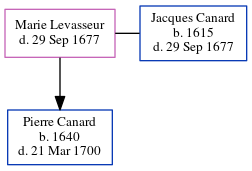

Marie Canard (née Levasseur) - 1677
[ Home ] | [ Calendar ] | [ Surnames Index ] | [ Family History ]Marie Levasseur and had 1 child with Jacques Canard: Pierre.
She died on Sep 29, 1677.
Children
- Pierre was born in 1640
Family Tree
Generated by ged2site. Last updated on Jun 15, 2024